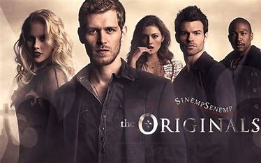

BEST TV SHOW
 The Originals is The Vampire Diaries spin-off series which is produced by The CW. The twentieth episode of the fourth season, namely called The Originals, served as a backdoor pilot. The series was green-lit on April 26, 2013.[1] It was announced by Julie Plec on July 20, 2017, that season five would serve as the series' final season.[2]
The series mainly stars Joseph Morgan as Klaus Mikaelson, Daniel Gillies as Elijah Mikaelson, Claire Holt as Rebekah Mikaelson, Phoebe Tonkin as Hayley Marshall and Charles Michael Davis as Marcel Gerard.